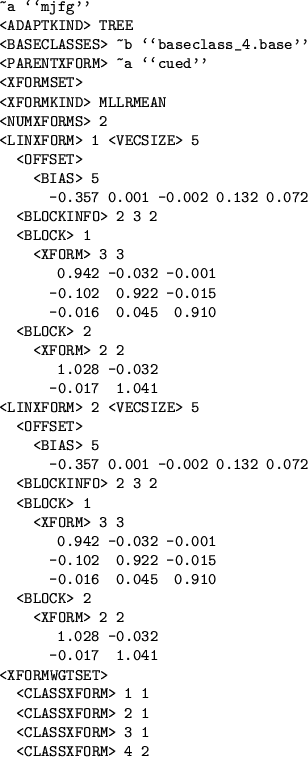

Hierarchy of Transform
It is possible to specify a hierarchy of transformations. This results
from using a parent transform during the training process.
Figure 9.5:
Example of an MLLR transform using with a parent transform
|  |
Figure 9.5 shows the use of a set of MLLR transforms
generated using a parent CMLLR transform stored in the macro ``cued''. The
action of this transform is
- Apply transform cued
- Apply transform mjfg
The parent transform is always applied before the transform
itself.
Hierarchy of transforms automatically result from using a parent transform
when estimating a transform.
Back to HTK site
See front page for HTK Authors